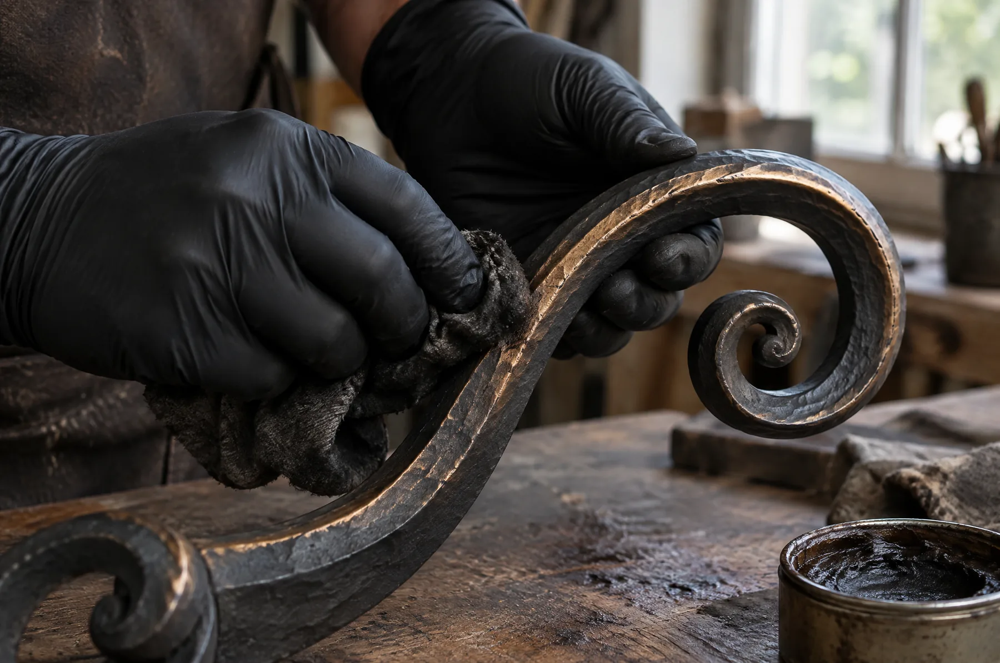
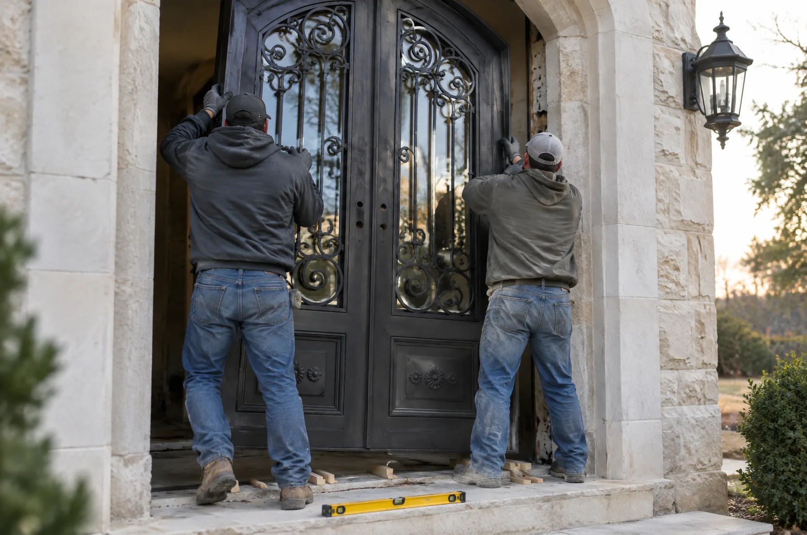

Measure
We template the opening ourselves, never from a builder's plan. Plumb, square and header height decide more of the design than taste does, and it is cheaper to find out now than at install.
Twelve to sixteen weeks from your ticket to a door on its hinges. This is where the time goes.
We template the opening ourselves, never from a builder's plan. Plumb, square and header height decide more of the design than taste does, and it is cheaper to find out now than at install.

Your ticket becomes a full-size elevation on paper. You mark it up, we redraw it, and nothing is cut until you sign it. This is where the configurator door gets fitted to your real opening.

Six to ten weeks at the anvil, depending on the style. Tuscan and Gothic take the longest; Modern and Flush the least. You get photographs at the frame, the ornament and the glazing.

Every finish is applied by hand and sealed. You approve it on an offcut from your own door, not a chip card, because bronze and patina come out different on every piece.

The same crew that built it hangs it, usually in one or two days. We set the locks, adjust the swing, and come back at ninety days once the house has moved a little.
If these do not work for your project, better that we both know now.